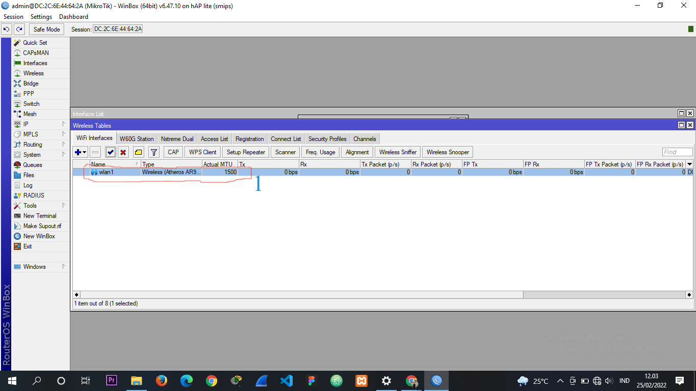
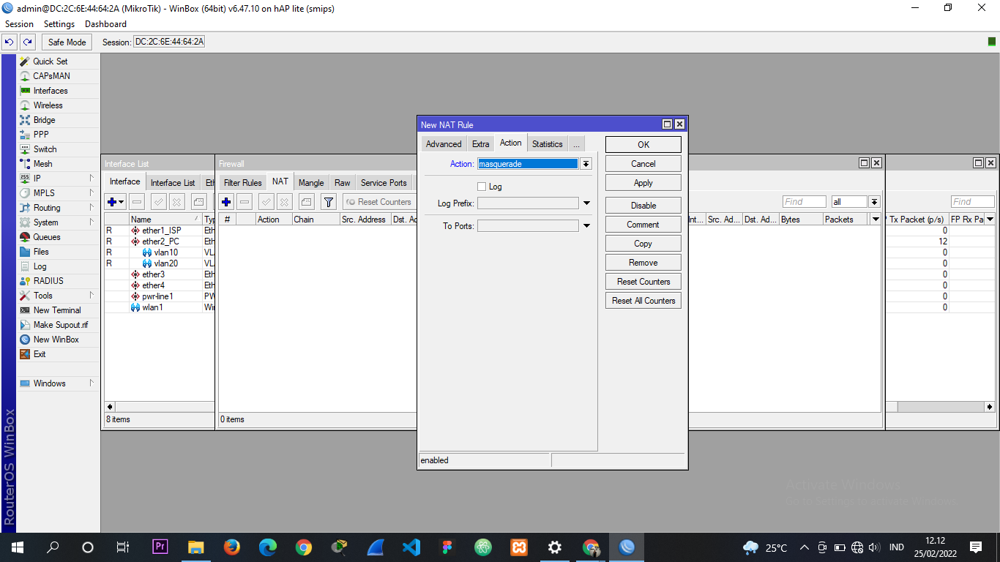
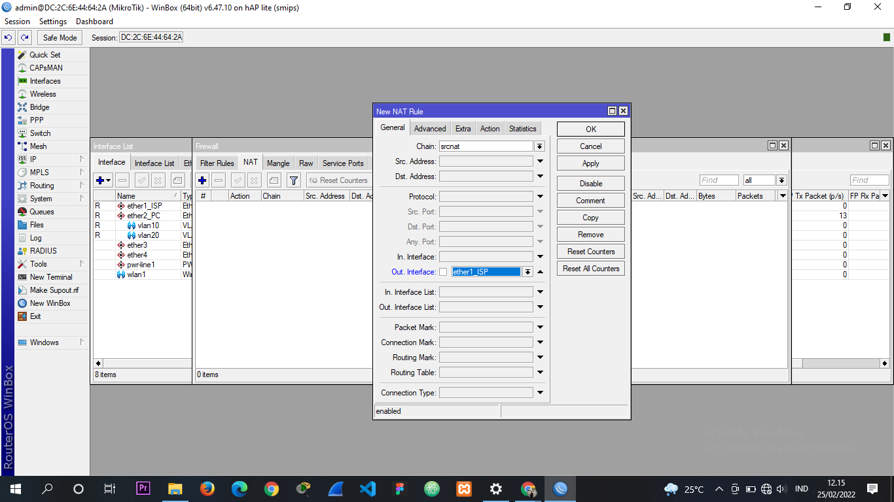
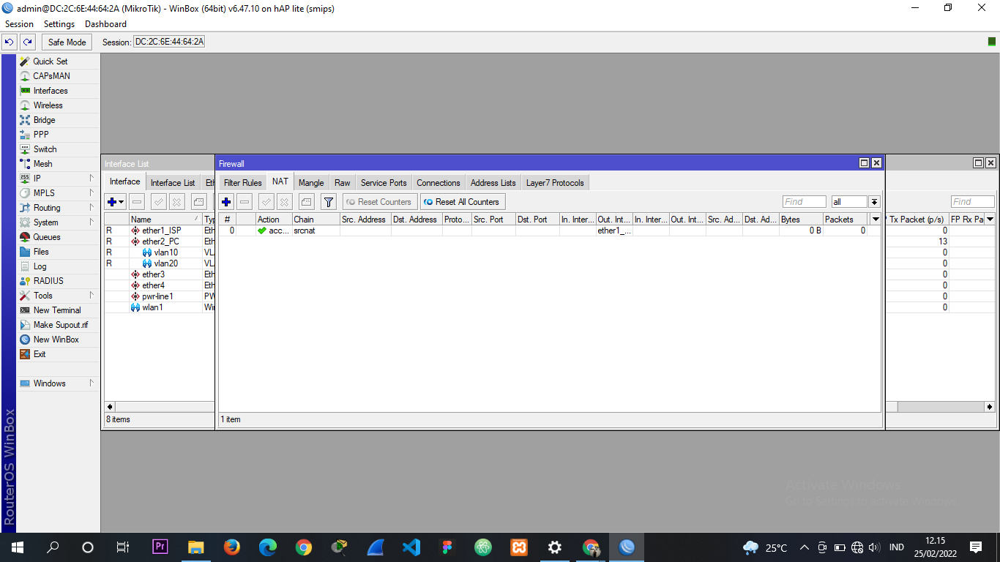
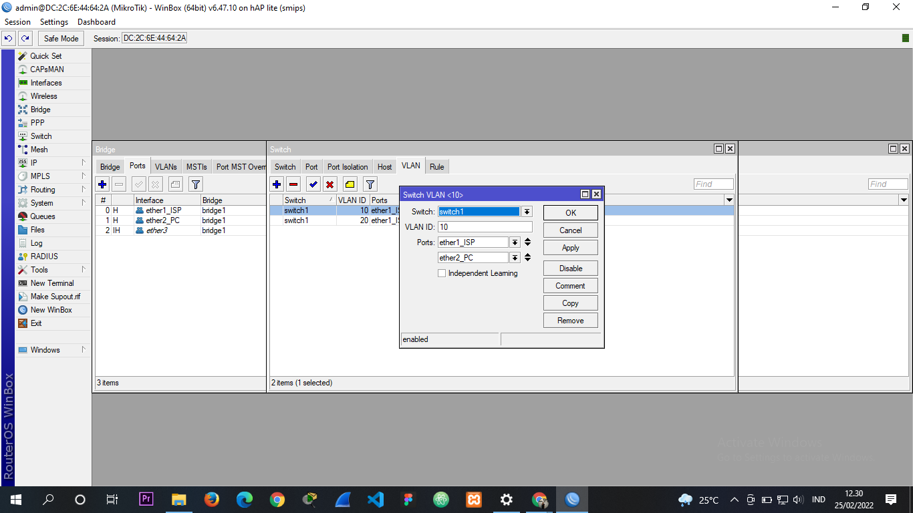
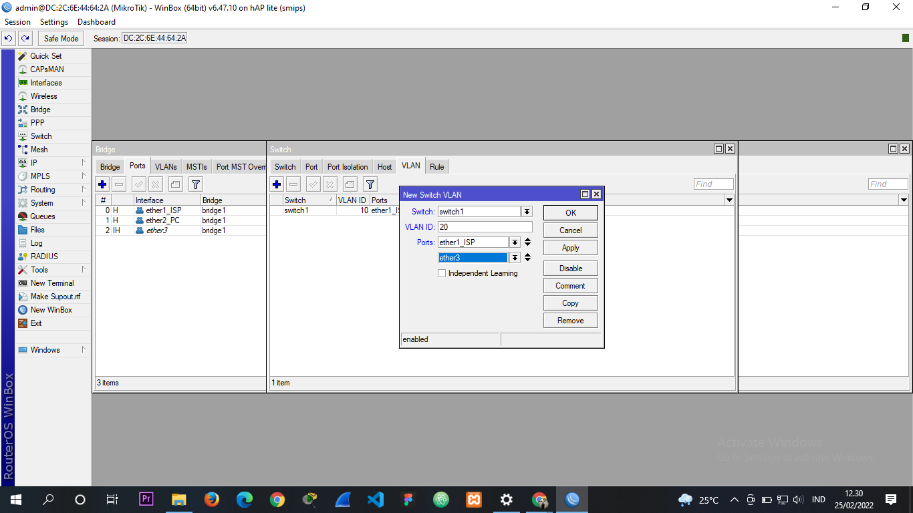
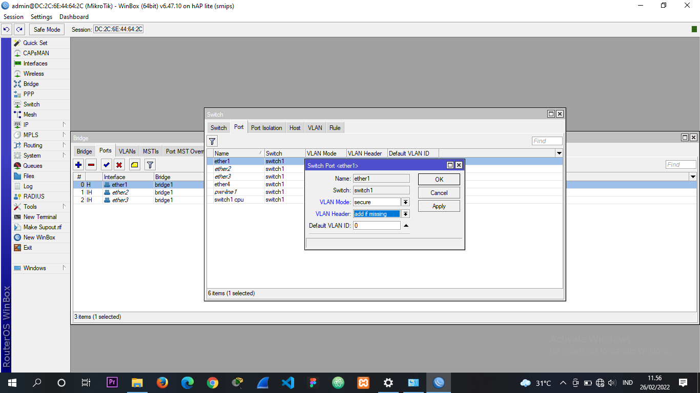
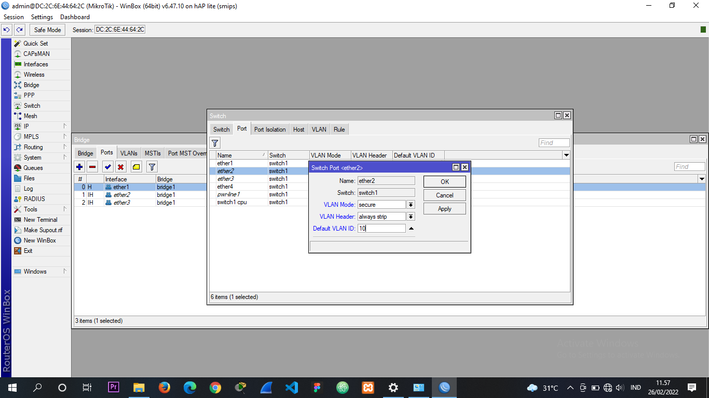
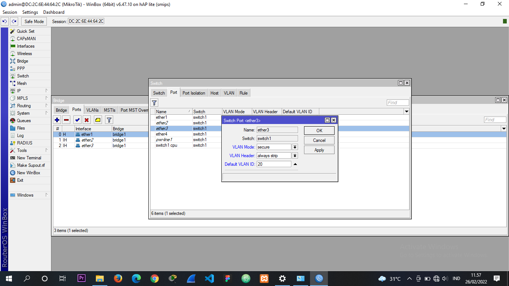

Gambar 1.0
Gambar 1.0
Mikrotik adalah sistem operasi Linux base yang diperuntukkan sebagai network router. Didesain untuk
memberikan kemudahan bagi penggunanya. Administrasinya bisa dilakukan melalui Windows Application
(WinBox). Selain itu instalasi dapat dilakukan pada Standard komputer PC (Personal Computer).
PC yang akan dijadikan router mikrotik pun tidak memerlukan resource yang cukup besar untuk penggunaan
standard, misalnya hanya sebagai gateway. Untuk keperluan beban yang besar.
Bagaimana Konfigurasi VLAN di MikroTik:
pertama-tama temen temen sudah mendownload software WinBox nya ya jika blom download Klik disni.
alat apa saja yang dibutuhkan? :
-
Memilik ISP
-
2 Mikrotik
-
2 Kabel LAN
Topoologi yang akan kita buat seperti dibawah ini :
| Default gateway | Name | password | |
|---|---|---|---|
| ISP | 192.168.1.2/24 192.168.1.1 |
- | - |
| VLAN 10 | 192.168.10.1/24 | Lab admin | - |
| VLAN20 | 192.168.20.1/24 | Lab jaringan | - |
| Wlan 1 | 192.168.30.12/24 | Ignasius | masuk |
SETTING
MIKROTIK1
STEP YANG PERTAMA
-
colokan mikrotik1 ke sumber daya
-
colokan kable LAN yang dari ISP ke Mikrotik1 di port Ether 1
-
colokan kable LAN Mikrotik1 di Ether 2 Menuju ke pc/laptop anda
STEP YANG KE DUA
-
Buka aplikasi ke sayangan anda yaitu WinBox
-
Pergi ke menu Interface

Gambar 3.0 -
Berikan Nama pada interfacenya, agar tidak bingung
-
Tambahkan VLAN 10 dan 20 di Ether 2 dengan cara:
-
pencet tanda "Plus" atau +
-
pastikan kalian berada di "General"
-
Untuk Name nya tulis VLAN 10
-
Untuk VLAN ID nya tulis 10

Gambar 4.0 -
-
Pencet IP ==> Address ==> lalu pencet tanda + Masukan Ip VLAN 10 , VLAN 20, WLAN1 DAN ISP

Gambar 5.0

Gambar 6.0

Gambar 7.0

Gambar 8.0
Hasil IP Address
Di Karanakan Wirelesss berwarna Merah , kita aktifkan terlebih dahulu
Pencet Wirelesss lalu pencet pada tulisan Wirelesss lalu pencet tombol 'CENTEANG' (jika Wlan1 nya sudah berwarna, berarti sudah diaktifkan) Langkah selanjutnya adalah memberikan SSID pada Wirelesss
-
Pencet Double Click pada tulisan wlan1
-
Ubah MODE nya menjadi AP BRIDGE
-
Ganti SSID mnejadi nama anda
-
Klik Apply lalu OK
Gambar 9.0
Gambar 10.1
Sekarang Setting DNS nya dengan meggunakan DNS google yaitu (8.8.8.8) dan Centang allow renote
Klik Apply lalu OKSetting IP Routes pilih menu di general
lalu isikan dengan "Default ISP " kalian. disini default ISP saya (192.1.1) klik Apply lalu OK

Gambar 10.2

Gambar 10.3* JIKA TERDAPAT TULIS SELAIN "AS" TANDANYA TIDAK BERHASILL YA *
Seleanjutnya kita cek terlebih dahulu apakah sudah terkoneksi atau belum dengan cara
-
Buka New terminal
-
lalu ketikan ping google.com
@# langkah selanjutnya untuk menyetting Firewall
pilih IP ==> Firewall ==> NAT klik tanda + ==> Action : Masquarade ==> pilih ke General ==> Chain : scrnat ==> Out Interface : Ether1
Gambar 10.4

Gambar 10.5

Gambar 10.6

Gambar 10.7Sekarang setting DHCP SERVER nya
-
Pilih DHCP SERVER
-
pilih DHCP Setup lalu pilih VLAN 10 tinggal NEXT aja
-
pilih DHCP Setup lalu pilih VLAN 20 tinggal NEXT aja
Setting Hotspot nya
-
pilih Hotspot ==> DHCP Setup( Next Next aja )
-
jika menemukan DNS NAME ketikan saja , contoh ignasius.com lalu buat Nama dan password
-
Pilih bagian Server Profile ==> Doubeklik pada hsprof1 ==> pilih pada bagian LOGIN ==> pada bagian cookie , centang nya di hapus
-
Coba temen temen cek di Pengaturan WIfi , pasti ada SSID yang kalian buat tadi
Untuk pengeturan di MIKRITK1 hanya sampai sini saja , lanjut setting di Mikrotik2
SETTING
MIKROTIK2
STEP YANG PERTAMA
-
colokan kabel LAN di Ether1 dari MIKRoTK1 di ether2
-
colokan kabel LAN di Ether2 ke pc anda
STEP 2
-
Bukan winbox kalian
-
Pilih pada bagian Bridge ==> pencet tanda + lalu Ok
-
kalian pilih menu "PORTS" lalu kalian tambahkan secara satu persatu dari Ether1, Ether2, Ether3

Gambar 10.8 -
lalu kali pilih menu SWITCH lalu Pilih menu VLAN
-
Pilih PORTS ==> + ==> ports Ether1 == > Ether2

Gambar 10.9 -
Pilih PORTS ==> + ==> ports Ether1 == > Ether3

Gambar 11.0
-
-
Pilih menu Switch pada ports
-
Double click pada ether1
VLAN MODE : Secure
VLAN Header : add is missing
lalu oke -
Double click pada ether2
VLAN MODE : Secure
VLAN Header : always strip
VLAN ID : 10
lalu oke -
Double click pada ether3
VLAN MODE : Secure
VLAN Header : always strip
VLAN ID : 20
lalu oke

Gambar 11.1

Gambar 11.2

Gambar 11.3
-
SELESAI
@# langkah selanjutnya untuk memberikan IP address